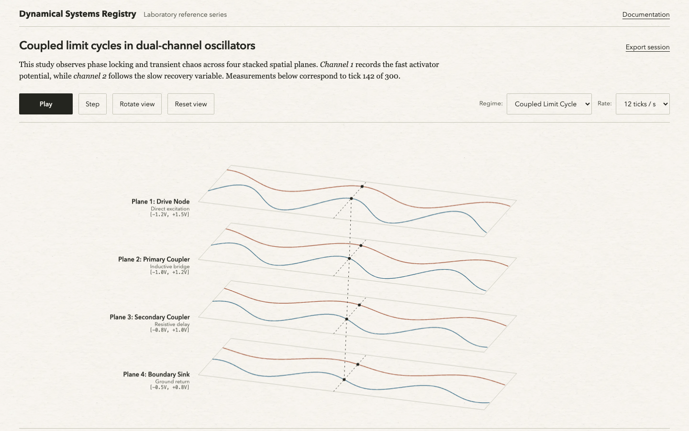

Paper dynamics
A paper-backed analytical interface with fine rules, restrained plots, and readable measurements. Built for studying changing signals, state-space trajectories, and coupled oscillators.
Typography
Avenir Next, Georgia, Menlo
Corner radius
2px controls, 0px containers
Max container
1600px desktop
Signature element
3D wireframe plane stack
